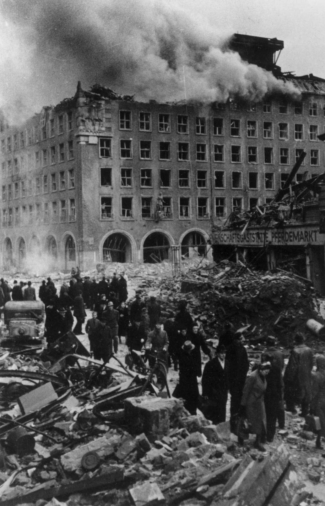

24 juillet – 3 août 1943
Hambourg – Allemagne
Alliés : Royal Air Force (RAF), US Army Air Forces (USAAF).
Axe : Allemagne – Défense antiaérienne, Luftwaffe.
L’opération Gomorrhe est l’une des campagnes de bombardements les plus destructrices de la Seconde Guerre mondiale. Les Alliés visent Hambourg pour affaiblir l’industrie allemande et briser le moral de la population. Les attaques combinées RAF/USAAF provoquent une destruction massive de la ville.
Les bombardements commencent le 24 juillet 1943. Les raids nocturnes de la RAF utilisent des bombes incendiaires en grande quantité, tandis que les attaques diurnes de l’USAAF ciblent les infrastructures industrielles. Le 27 juillet, une tempête de feu se déclenche dans le quartier de Hammerbrook, atteignant des températures extrêmes et détruisant tout sur plusieurs kilomètres.
Hambourg est ravagée : près de la moitié de la ville est détruite. Les pertes humaines sont très élevées et l’impact psychologique est immense. L’industrie allemande subit un coup sévère, ralentissant la production d’armement.
L’opération Gomorrhe marque un tournant dans la guerre aérienne. La tempête de feu d’Hambourg devient l’un des symboles les plus terrifiants des bombardements stratégiques. L’événement influence les tactiques alliées et démontre la vulnérabilité des grandes villes industrielles allemandes.